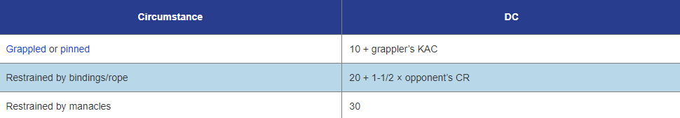
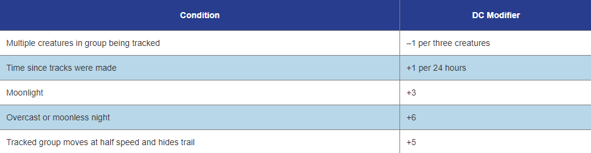

Balance
As part of a move action, you can use Acrobatics to move across narrow surfaces and uneven ground without falling. A successful check allows you to move at half your land speed across such a surface. While balancing, you are flat-footed. If you fail the Acrobatics check to begin moving across a narrow surface or uneven ground, your move action ends at the point just before you’d need to begin balancing. If you fail the check while already balancing (having succeeded on a previous turn), you fall prone and the GM may rule that you start falling, depending on the type of surface you are moving across. If you take damage while balancing, you must immediately attempt an Acrobatics check at the initial DC. On a success, you remain balancing (and can continue to move if it is your turn). If you fail, you fall prone and, depending on the type of surface you are balancing upon, the GM can rule that you start falling. You can't take 20 on Acrobatics checks to balance. The DCs for Acrobatics checks to balance are based on the width of the surface you are traversing, but can also be adjusted based on environmental circumstances such as slope and surface conditions. Such modifiers are cumulative; use all that apply.
Escape
You can use Acrobatics to escape from grapples, pins, and restraints. Attempting to escape from a grapple or pin is a standard action. On a success, you free yourself from the grapple or pin and no longer have the grappled or pinned condition. The DC to escape a grapple or pin is typically 10 + the grappler's Kinetic Armor Class. Escaping from restraints can take 1 minute or more, depending on the type of restraint. The DC to escape from restraints is based on the nature of the restraints and sometimes the CR of the creature that did the binding (see the table below). You can take 20 on Acrobatics checks to escape from most restraints, but not on checks to escape grapples.
Fly
Generally, you need to attempt an Acrobatics check while flying only if you attempt a difficult maneuver or are in dangerous wind conditions. Usually, these checks are attempted as part of a move action while flying. You receive a bonus or penalty to Acrobatics checks to fly depending on your maneuverability: a -8 penalty for clumsy maneuverability, no bonus for average maneuverability, or a +8 bonus for perfect maneuverability.
The following situations require Acrobatics checks and have consequences for failure. The DCs for such checks are based on the current wind and air conditions and other factors determined by the GM. You can't take 20 on Acrobatics checks to fly.
Avoid falling damage
If you are falling and you can fly, you can attempt an Acrobatics check as a reaction to negate the damage from the fall. If you fail, you fall normally. If you have perfect maneuverability, you can avoid falling damage automatically without attempting a check.
Fly in dangerous wind conditions
The more violent the wind conditions, the more difficult it is to keep flying. In conditions of windstorm or higher (51+ mph), you must attempt an Acrobatics check to stay aloft each time you move. If you fail this check, you cannot move. If you fail this check by 5 or more, you are blown 2d6 x 10 feet in the direction of the prevailing wind (or in a direction decided by the GM), and take 2d6 bludgeoning damage. You can't take 10 on Acrobatics checks to fly in dangerous wind conditions.
Hover
Safe flight typically requires momentum. If you wish to stay in place, or hover, while flying, you must attempt an Acrobatics check as a move action. If you fail, you fall. If you have clumsy maneuverability, you cannot hover at all. If you have perfect maneuverability, you can hover automatically without attempting a check, though you can hover as a swift action instead of a move action if you succeed at an Acrobatics check (there is no penalty for failure).
The DCs for Acrobatics checks to fly are based on the prevailing wind conditions. The following chart provides the base DCs for air conditions, whether an Acrobatics check is required to fly in those air conditions, and whether a creature can take 10 on an Acrobatics check to fly. These wind conditions typically represent fairly clear skies and consistent wind speeds. The DC increases by as much as 5 for choppy wind or airborne debris, or 10 for both.
Tumble
As long as you do not have the encumbered or overburdened condition, you can use Acrobatics to move through a space threatened by an enemy or enemies without provoking attacks of opportunity from them. Tumbling is a move action, and you move at half speed. The DC to move through an opponent's threatened area is 15 + 1.5 x the opponent's CR. If multiple opponents are threatening the same space, you attempt one check with a DC based on the opponent with the highest CR, and the DC increases by 2 for each additional opponent beyond the first.
You can also tumble directly through an opponent's space; the DC is 20 + 1.5 x the opponent's CR. If you fail this check, you stop moving adjacent to your opponent and provoke an attack of opportunity.
If you attempt to move through multiple threatened spaces or opponent' spaces during the same round, you must succeed at a check for each space, and the DC of each check beyond the first increases by 2. For example, if you tumble through a space threatened by two CR 1 creatures and a CR 2 creature, the DC = 15 + 3 + 2 + 2 = 22. If you then tumble through the space of the CR 2 creature, the DC = 20 + 3 + 2 = 25.
In all of these cases, the DC is modified by the same environmental circumstances that apply to the balance task of Acrobatics. If you fail the check, you provoke attacks of opportunity as normal. If you want to move at full speed while tumbling, you take a -10 penalty to the check. You can use Acrobatics to tumble while prone, but you can move only 5 feet as a full action and take a -5 penalty to the check.
Use the following base DCs for Acrobatics checks to tumble.

Climb
As part of a move action, you can use Athletics to climb up, down, or across a slope, a wall, or another steep incline. You can even climb on a ceiling, provided it has handholds, but you cannot climb on a perfectly smooth surface. On a successful check, you move at half your land speed across such a surface. If you fail the check by 4 or less, you make no progress. If you fail by 5 or more, you fall. You can't take 20 on an Athletics check to climb. You need at least two hands to climb, but you can cling to a wall with one hand while you cast a Spell, shoot a small arm, or take some other action that takes only one hand. While climbing or clinging to a wall, you are flat-footed. If you have a climb speed, you receive a +8 bonus to Athletics checks to climb and don't need to attempt Athletics checks to climb except in hazardous circumstances.
The DCs for Athletics checks to climb are based on the object being climbed, but can also be adjusted based on environmental circumstances such as gravity, winds, and surface conditions. Such modifiers are cumulative; use all that apply.
Jump
As part of a move action, you can use Athletics to horizontally or vertically jump a distance no greater than your remaining amount of movement. If you take a 10-foot running start just prior to the jump attempt, the DC is equal to the number of feet you are attempting to jump horizontally, or four times the number of feet you are attempting to jump vertically.
If you do not take a running start, the DC of the check doubles. The DC is modified by the same environmental circumstances that apply to Acrobatics checks to balance. If you fail the check, you fall. If you fail by 5 or more, you fall prone even if you don't take any damage from the fall. Creatures with a land speed of 35 feet or more gain a +4 bonus to Athletics checks to jump. This bonus increases by 4 for every 10 by which a creature's land speed exceeds 40 feet. You can't take 20 on Athletics checks to jump.
Swim
As part of a move action, you can use Athletics to swim. On a successful check, you move half your land speed through water and similar fluids. If you fail the check by 4 or less, you make no progress. If you fail by 5 or more, you sink beneath the surface or sink deeper, and you must hold your breath or begin drowning. If you do not have a swim speed, for each hour you swim, you must succeed at a DC 20 Athletics check or take 1d6 nonlethal damage from fatigue. If you have a swim speed, you receive a +8 bonus to all Athletics checks to swim and don't need to attempt Athletics checks to swim except in hazardous circumstances (see the table below).
The DCs for Athletics checks to swim are based on the prevailing conditions, but can also be adjusted based on environmental circumstances such as currents or the presence of debris. Such modifiers are cumulative; use all that apply.
Diversion
As a move action, you can use Bluff to create a diversion. Your Bluff check is opposed by the Sense Motive check of the creature you are attempting to beguile. If you succeed, you can either attempt the hide task of Stealth as if you had cover or concealment, or you gain a +10 bonus to perform the palm an object task of Sleight of Hand (your choice). Occasionally, your Bluff check might be opposed by several creatures (for instance, if you are on a crowded space station promenade); in such cases, the GM might decide to roll several Sense Motive checks, and you succeed only against creatures with Sense Motive results lower than your Bluff result.
Feint
As a standard action, you can use Bluff to feint in combat, enabling you to treat your opponent as flat-footed for your next attack against it before the end of your next turn. The DC of this check is equal to either 10 + your opponent's total Sense Motive skill bonus, or 15 + 1-1/2 x the opponent's CR, whichever is greater. You can't feint against a creature that doesn't have an Intelligence score, and you cannot take 10 or take 20 on a Bluff check to feint.
Lie
You can use Bluff to deceive someone or tell a convincing lie. A quick, simple lie in combat is part of combat banter; otherwise, telling a lie is at least a full action, but it can take longer if the lie is elaborate, as determined by the GM. If the creature is suspicious or attending carefully to your lie (as per the detect deception task for Sense Motive), the check is opposed by the Sense Motive check of the creature you are lying to; otherwise, the DC of this check is equal to 10 + the creature's total Sense Motive skill bonus. If you succeed, the creature you are lying to believes you are telling the truth, at least until confronted with evidence to the contrary. The GM may determine that some lies are so improbable that it is impossible to convince someone they are true.
The DCs for Bluff checks to lie are adjusted based on the target's initial attitude toward you (see Diplomacy) as well as other circumstances determined by the GM (such as the plausibility of the lie).
Pass Secret Message
You can use Bluff to pass a secret message to an ally without others understanding the message's true meaning. Doing so in combat is part of combat banter. The DC of this check is 15 for simple messages and 20 for more complex messages, as determined by the GM. Those overhearing the message can attempt an opposed Sense Motive check to learn the gist of the message. You cannot take 20 on a Bluff check to pass a secret message.
Access Unsecured System
You can use Computers to access an unsecured computer system's most basic functions. The DC to access the information or functions of a public computer with no countermeasures or firewalls is generally 10. Unlike other tasks of the Computers skill, you can attempt to access a system untrained if you take 20 on the task, requiring 2 minutes. Secured computer systems, and secured sections of an unsecured system, can be accessed by making a Computers check to hack a system.
Craft Computer
If you have enough ranks in Computers, you can build computers.
Create or Detect Forgery
You can use Computers to forge official documents. This takes 1d4 minutes. The GM rolls the Computers check to create a forgery in secret, so you're not sure how good your forgery is. This check is opposed by the Computers check of anyone who examines the document to determine its authenticity.
The DCs for Computers checks to detect a forgery are based on the type of forged document as well as other circumstances determined by the GM, as shown in the table below.
Destroy or Repair System or Module
You can use Computers to repair a computer system or module that has been disabled, or destroy one that has been either removed or disabled by spending 10 minutes per tier of the computer system working on the computer. The DC is based on the tier of the computer system. If you are repairing a disabled module or system and you fail the check by 5 or more, you accidentally destroy the module or system. You can't take 20 on a Computers check to destroy or repair a computer system.
Detect Fake Shell
If you have access to a computer, but not root access, you may actually only have access to a fake shell (a computer countermeasure that grants access to fake files instead of real ones). If you succeed at the check, you realize that you have accessed a fake shell. The DC is based on the tier of the computer system.
A character with root access to a computer can disable or manipulate a countermeasure or module as a standard action with a DC 10 Computers check. If you have access (but not root access) to a computer, you can attempt a Computers check to activate, add, disable, or manipulate any countermeasure or module. If you want to affect a countermeasure or module that is behind a firewall, you must first hack the system (see below) to gain access to it. Activating or disabling a countermeasure or module generally takes a standard action. Adding or removing a module generally takes 1 minute per tier of the computer. All of these tasks have a DC equal to the DC to hack the system. You cannot take 20 on a Computers check to disable or manipulate a module.
Gain Root Access
If you have access to a computer, you can attempt to upgrade your authorization to gain root access. This works similar to hacking the same computer, but the DC is 20 higher. In many cases it is impossible to gain root access, and every task beyond the computer's basic functions must be attempted as a separate check to destroy, repair, disable, or manipulate modules or countermeasures. If a firewall has been set to have a different set of authorized users with root access, you must gain root access to it separately. Once you have root access to a computer, you can alter who else is granted root access with a successful Computers check to hack the system.
Hack System
You can use Computers to hack a computer system to which you don't already have access. Hacking a computer system typically takes one full action per tier of the computer system. You can cut this time in half (to a minimum of one full action) for every 5 by which you increase the DC of the Computers check. If you succeed at the check, you gain access to any part of the computer that is not behind a firewall. This allows you to use the basic functions of the computer), and to make further checks that require you to have access. Accessing parts of a computer behind a firewall requires an additional Computers check for each firewall.
If you fail a Computers check to hack a system, you might trigger a countermeasure, if one has been installed. If you take 20 on a Computers check to hack a system with countermeasures without first disabling or destroying them, the countermeasures are automatically activated.
Decipher Writing
You can use Culture to decipher writing in an unfamiliar language or a message written in an incomplete or archaic form. It takes at least 1 minute to decipher approximately 250 words of writing or fewer. The GM often rolls Culture checks to decipher writing in secret. If you succeed at the check, you understand the general content of the text. If you fail, you don't understand the text. If you fail the check by 10 or more, you entirely misconstrue the meaning of the text. You can't take 20 on a Culture check to decipher writing unless you are trained in the Computers skill and have access to an information network or downloaded data set. In this case, there is no chance of misconstruing the information presented in the writing.
The DCs for Culture checks to decipher writing are based on the complexity of the text as well as other circumstances determined by the GM.
Change Attitude
When you interact socially with another creature, that creature has an initial attitude toward you. Attitudes fall into five categories (from worst to best): hostile, unfriendly, indifferent, friendly, and helpful. You can use Diplomacy to change a creature's initial attitude to a more positive one, but at the risk of angering the creature and worsening its attitude toward you if you fail. This is a language-dependent ability. The creature must have an Intelligence of 3 or higher, and you must spend at least 1 minute interacting and conversing with the creature to change its attitude. The DC of this check is equal to either 10 + your opponent's total Diplomacy skill bonus, or 15 + 1-1/2 x the opponent's CR (or the encounter's CR, if you are trying to change the attitude of a group of creatures), whichever is higher. The DC is modified by the creature's initial attitude and other circumstances, as determined by the GM. If you succeed, the creature's attitude improves by one category (for instance, a hostile creature becomes unfriendly). If you exceed the DC by 5 or more, you can choose to spend 10 more minutes interacting with the creature to improve its attitude by one additional category. If you fail the check by 5 or more, you anger the creature, and the creature's attitude worsens by one category (for instance, a friendly creature becomes indifferent).
Attacking a creature always worsens its attitude by one category for each attack made, and may have other consequences based on the creature's current attitude.
Positively affecting a creature's attitude takes time. You typically can't use Diplomacy to positively change a creature's attitude by more than one category (or two categories if you spend the extra time) within a 24-hour period, unless the GM decides otherwise or you have an ability that allows you to do so.
The five categories of initial attitude are described below, along with the effects of negatively changing each attitude.
Hostile
A hostile creature would rather attack you either physically or verbally, than civilly converse with you. Most enemies you meet are hostile. It's often hard to talk diplomatically with hostile creatures, though it can be done remotely (via a communication device) or by avoiding combat with the creatures while persuading them to listen to reason. If you fail the Diplomacy check by 5 or more, you can't attempt to change a hostile creature's attitude again for 24 hours.
Unfriendly creatures are typically wary of you, or afraid you will try to hurt them if they aren't careful or fail to keep you at bay. Unfriendly creatures become hostile when angered or attacked.
Indifferent
Indifferent creatures take little notice of you, but hold no ill will against you. They don't care about your plight, but may give you simple advice or directions. Most creatures you meet in everyday life or in settlements are indifferent. Indifferent creatures become unfriendly when angered or attacked.
Friendly
Either due to a generally cheerful disposition or a predisposition to like you, friendly creatures treat you with kindness and respect. They may give you more-detailed advice or simple aid, but generally won't go out of their way to be helpful. If angered or attacked, friendly creatures become indifferent and often try to avoid further contact with you if possible.
Helpful
Helpful creatures are not only friendly, but desire to help you, within reasonable means. Helpful creatures typically give you more lengthy or difficult aid, or offer small services that are readily available to them. When angered or attacked, helpful creatures become friendly, but somewhat guarded, as they are often confused by such reactions to their generosity.
The DCs for Diplomacy checks to change attitudes are adjusted based on the creature's initial attitude as well as other circumstances determined by the GM.
Gather Information
You can use Diplomacy to gather information about a specific topic or individual. You must spend at least 1d4 hours canvassing people within a settlement or local region. If you succeed, you learn something about that topic or individual, though the GM may determine that some information is simply unknown to the local people.
The DCs for Diplomacy checks to gather information are based on the nature of the information being sought and may be adjusted by the GM to reflect other circumstances, such as bribes or gifts.
Change Appearance
You can use Disguise to change your appearance with 1d3 x 10 minutes of work with a disguise kit, by casting a Spell such as disguise self, or by using a technological device such as a holoskin. The GM rolls the Disguise check in secret, so you're not sure how good your disguise is. This check is opposed by the Perception check of anyone who might realize that you are not who you appear to be. If you are not drawing attention to yourself, other creatures do not usually get to attempt a Perception check to pierce your disguise. If creatures are being particularly alert for suspicious activity (such as security personnel on a Starship or space station), it's assumed that such observers are taking 10 on their Perception checks.
The effectiveness of your disguise depends on how much you're changing your appearance. Without the aid of transformative magic or technology that allows you to do otherwise, you can use Disguise only to appear as a creature that is your size or one size category larger or smaller than you. This does not change your actual size or reach. Disguises are general—you cannot disguise yourself as a specific person.
Certain magic Spells, such as disguise self, grant you a +10 bonus to Disguise checks.
The DCs for Disguise checks are adjusted by the type of disguise as well as other circumstances determined by the GM. These modifiers are cumulative; use all that apply.
Arm Explosives
You can use Engineering to arm an explosive using a detonator. This takes 1 minute to connect the detonator and set the explosive. The DC of this check is typically 10. If you fail the check, you can attempt to arm the explosive again. If you fail the check by 5 or more, you trigger the explosive prematurely.
You can also attempt to build an explosive more difficult to disarm. To do so, choose a target disarm DC (the DC should be in an increment of 5, with a minimum DC of 15). This DC becomes your target DC to arm the explosive as well as the DC to disarm the explosive (see Disable Device below).
Assess Stability
You can use Engineering to assess a structure or a piece of machinery to determine its stability, usability, and structural weak points. This takes 1 minute or more, and the DC is determined by the GM.
Use the following base DCs for Engineering checks to assess stability. These DCs can be adjusted by other circumstances such as the complexity of the structure and damage to the structure, as determined by the GM.
Craft Tech Item
If you have enough ranks in Engineering, you can create technological devices or items (including computers).
Disable Device
You can use Engineering to disable a lock, a trap, or a mechanical or technological device, or to disarm an explosive, as long as the device is unattended and you can access it. The amount of time this takes depends on the complexity of the device but typically requires at least one full action. The DC of the check is determined by the GM and is based on the complexity of the device. For extremely complex devices or systems, the GM might require multiple checks. The GM rolls the Engineering check to disable a device in secret, so you don't necessarily know whether your attempt has succeeded or failed. If you succeed, you disable the device. If you fail the check and discover your error, you can attempt to disable the device again. If you fail the check by 5 or more, something goes wrong. If the device is an explosive or a trap, you trigger it. If you are attempting some sort of sabotage, you think the device is disabled, but it still works normally.
You can also use the disable device task to rig a device to work normally for a while, and then become disabled sometime later. This increases the DC of the check by 5. If you want to leave no trace of your tampering, the DC increases by an additional 5. If you succeed at the check, you can rig the device to become disabled up to 1 round later for each rank of Engineering you have. If you fail the check by 5 or more, your efforts have the same effect as if you were merely attempting to disable the device.
Due to the danger, you cannot take 20 on an Engineering check to disable a device.
The DC for an Engineering check to disable a device is based on the complexity of the device. The following chart provides base DCs by complexity, examples of such devices, and the time it takes to disable such devices. The GM can adjust these DCs and times to reflect other circumstances. Systems with redundancies or similar safety measures could have DCs 1 to 5 higher than those listed.
Identify Creature
You can use Engineering to identify constructs with the technological subtype such as robots.
Identify Technology
You can use Engineering to identify the properties and uses of technological items and devices such as Starships and weapons, as well as alien technology. Generally, a check is not required to identify relatively simple technological items that are commonly available. You can take 20 on an Engineering check to identify technology, but only if you have a means of researching, such as access to an information network or downloaded data set.
The DCs for Engineering checks to identify technology are based on the item's rarity.
Repair Item
You can use Engineering to repair a mechanical, technological, or hybrid object or piece of equipment, as long you have access to it. The amount of time this takes typically depends on the complexity of the object. You can repair an object or piece of equipment you crafted in half the usual time. The DC of the check is determined by the GM and based on the complexity of the object. If you succeed, you restore a number of Hit Points equal to the result of your Engineering check. If you fail the check by 10 or more, you damage the object further, dealing 1d4 damage to it; this damage can't reduce an item to fewer than 1 HP.
If the object or piece of equipment is damaged but not broken, you can repair it at no cost. If it is broken but not destroyed, you must spend 10 UPBs per item level (assume a simple item has an item level of 1) each time you attempt to repair it. A destroyed object or piece of equipment can't be repaired with the Engineering skill.
You can't take 20 on an Engineering check to repair an item or object.
The DC for an Engineering check to repair an item is based on the complexity of the object. The following chart provides base DCs by complexity and examples of such items. The GM may adjust these DCs and times to reflect other circumstances.
Bully
You can use Intimidate to bully a creature to temporarily change its attitude to helpful (see Diplomacy). This is a language-dependent, sense-dependent ability. You must spend at least 1 minute conversing with the creature. The DC of this check is equal to either 10 + your opponent's total Intimidate skill bonus, or 15 + 1-1/2 x the opponent's CR, whichever is greater. If you succeed, the creature gives you information it has that you want, takes actions that do not endanger it, or grants limited assistance that you request, but does so under duress. Such a change in attitude lasts for 1d6 x 10 minutes. At the end of this time, the creature's attitude toward you becomes unfriendly. If you fail the check by 5 or more, the creature's attitude becomes unfriendly, or hostile if it was already unfriendly. If the creature becomes unfriendly due to a failed check, it is likely to try to deceive you or otherwise hinder your goals.
Demoralise
As a standard action, you can use Intimidate to cause a creature within 30 feet of you to become shaken for a number of rounds. This is a sense-dependent ability. The DC of this check is equal to either 10 + your opponent's total Intimidate skill bonus, or 15 + 1-1/2 x the opponent's CR, whichever is greater. If you succeed, the target is shaken for 1 round. The duration increases by 1 round for every 5 by which the result of your check exceeds the DC.
Craft Drug, Poison or Medicinal
If you have enough ranks in Life Science, you can create drugs, poisons, and medicinals.
Craft Food or Drink
If you have enough ranks in Life Science, you can create food and drink items.
Identify Creature
You can use Life Science to identify aberrations, animals, humanoids, monstrous humanoids, oozes, plant creatures, and vermin.
Recall Knowledge
You can use Life Science to recall knowledge about bioEngineering, biology, botany, ecology, genetics, xenobiology, zoology, and other fields of biological science.
First Aid
As a standard action, you can use Medicine to stop bleed damage or administer first aid to a dying creature that you can touch. The DC of this check is 15. If you succeed at the check, the creature stops dying and becomes stable, or the bleed damage ends. Unlike with other tasks of the Medicine skill, you can attempt the first aid task untrained. You can't take 20 on a Medicine check to administer first aid.
Long Term Care
You can use Medicine to provide long-term care to a living, wounded creature. This can take a day or more, requires a medical lab or a medical bay on a Starship, and has a DC of 30. If you succeed at the check, the patient recovers Hit Points and ability score damage (as well as recovers from poison states) at twice the normal rate. If you exceed the DC by 10 or more, the patient recovers Hit Points and ability score damage (as well as recovers from poison states) at three times the normal rate. You can tend as many as six patients at a time, attempting a check for each one each day to determine the rate of healing. You cannot take 20 on a Medicine check to provide long-term care.
Long Term Stability
You can use Medicine to tend a creature that is unconscious but stable, ensuring that it doesn't die while it remains unconscious. Each hour, before the unconscious creature attempts its Constitution check, you can attempt a DC 15 Medicine check. If you succeed, the unconscious creature can treat its Constitution check result as if it were 10, allowing the creature to attempt another Constitution check the following hour. For more about long-term stability, see Stabilizing.
Treat Deadly Wounds
You can use Medicine to restore Hit Points to a living, wounded creature. This takes 1 minute, and the DC is based on the medical equipment used. If you succeed at the check, you restore 1 Hit Point per level or CR of the creature you are treating. If you exceed the DC by 5 or more, you add your Intelligence modifier to the amount healed. A creature can receive this treatment only once every 24-hour period, unless it is delivered in a medical lab. Most medical labs allow you to treat a creature's deadly wounds at least twice per day.
Treat Disease
You can use Medicine to treat a creature suffering from a disease. This takes 10 minutes and requires a medkit, a medical lab, or a medical bay on a Starship. Every time the diseased creature attempts a saving throw against the disease, you can attempt a Medicine check. If your result exceeds the DC of the disease, the creature receives a +4 bonus to its saving throw against the disease.
Treat Drugs or Poison
As a standard action, you can use Medicine to treat a drugged or poisoned creature. This requires a medkit, a medical lab, or a medical bay on a Starship. Every time the creature attempts a saving throw against the drug or poison, you can attempt a Medicine check. If your result exceeds the DC of the drug or poison, the character receives a +4 bonus to its saving throw against the drug or poison.
Craft Magic Item
If you have enough ranks in Mysticism, you can create magic items
Disable Magic Device
You can use Mysticism to disable a magical trap or other magical item. This functions as the disable device task of the Engineering skill, and the DC of the check is based on the trap itself. You can't take 20 on a Mysticism check to disable a magic device.
Identify a Spell Being Cast
If you can clearly observe a Spell being cast, you can use Mysticism to identify the Spell. The DC of this check is equal to 10 + 5 x the level of the Spell being cast. This does not require an action. You can't take 10 or 20 on a Mysticism check to identify a Spell.
Identify Creature
You can use Mysticism to identify constructs with the magical subtype, dragons, fey, magical beasts, outsiders, and undead
Identify Magic Item
As part of the action to cast detect magic, you can use Mysticism to identify the properties and command words of magic items. The DC of this check is equal to 15 + 1-1/2 x the item level. You can usually attempt a Mysticism check to identify a magic item only once per 24-hour period; further attempts within that period fail. However, casting an identify Spell allows you to attempt a second check in the same 24-hour period and grants you a +10 insight bonus to the check. If you have the time, you can take 20 to attempt another check to identify a magic item in the same 24-hour period, but only if you can perform research, such as with access to an information network or downloaded data set.
Recall Knowledge
You can use Mysticism to recall knowledge about alchemical theory, arcane symbols, deities, magic traditions, the planes, religious traditions and symbols, and related topics.
Repair Item
You can use Mysticism to repair a magical or hybrid piece of equipment, as long you have access to it. This typically takes 1 hour. You can repair a piece of equipment you crafted in half the usual time. The DC of the check is equal to 15 + 1-1/2 x item level. For a magical object without an item level, the GM determines the DC and the amount of time it takes to repair the object based on the object's complexity (see the repair item task of the Engineering skill for guidelines). If you succeed, you restore a number of Hit Points equal to the result of your Mysticism check. If you fail the check by 10 or more, you damage the item further, dealing 1d4 damage to it; this damage can't reduce an item to fewer than 1 HP.
If the piece of equipment is damaged but not broken, you can repair it at no cost. If it is broken but not destroyed, you must spend 10 UPBs per item level each time you attempt to repair it. A destroyed piece of equipment can't be repaired with the Mysticism skill.
You can't take 20 on a Mysticism check to repair an item or an object.
Notice
You can use Perception to notice things happening around you. This is the most basic task of the Perception skill. It can be used for a variety of reasons determined by the GM. You might attempt a Perception check to see if you can act in a surprise round, to spot something important out of the corner of your eye, or to realize there are hidden creatures nearby (though you can't notice a creature that is invisible unless it makes itself known). A Perception check to notice usually does not involve taking an action, though you must be conscious and have the use of at least some of your senses to do so. The GM determines the DC. You cannot take 20 on a Perception check to notice things.
The DCs for Perception checks to notice things are determined by the GM based on the circumstances and may be adjusted to reflect other conditions. See the search task below for a chart with some example circumstances and their typical DCs.
Pierce Disguise
As a move action, you can use Perception to recognize that a creature has changed its appearance. Sometimes, if you are being particularly alert for those in the area who might be in disguise, the GM might allow you to do this without taking an action. This check is opposed by a Disguise check attempted by the disguised creature. If you succeed, you realize the creature is disguised and not who it seems, but not necessarily who or what the disguised creature is beneath that disguise. If the disguised creature is impersonating a particular individual that you know, the GM might grant you a bonus to your Perception check.
Divination magic or scanners that allow you to see through illusions or holograms do not penetrate mundane and low-tech disguises, but they can negate illusory or holographic components of a disguise.
The DCs for Perception checks to pierce a disguise are adjusted according to how familiar the observer is with the particular individual the disguised creature is masquerading as, as well as other circumstances determined by the GM.
Search
As a move action, you can use Perception to search for something in particular, such as finding an invisible creature that has made itself known or a hidden creature you know is in the area, or looking for nearby traps or hazards. You can also search an area to find anything of interest that might be hidden or is otherwise not immediately noticeable, such as concealed cargo compartments or hidden treasure. In that case, it takes 1 minute to search an area no more than 20 feet by 20 feet (or smaller, if the GM rules the area is particularly cluttered or complex). The DC is determined by the Stealth check of the creature, by the trap or hazard involved, or by the GM. If you are not in combat, you can take 20 on a Perception check to search.
The DCs for Perception checks to search may be adjusted by the GM based on the circumstances and to reflect other conditions. The following chart provides some example circumstances and their typical DCs.
Craft Drug, Poison or Medicinal
If you have enough ranks in Physical Science, you can create drugs, poisons, and medicinals.
You can use Physical Science to recall knowledge about astronomy, chemistry, climatology, geography, geology, hyperspace, meteorology, oceanography, physics, and other fields of natural science.
Fire Starship Guns
When attempting a gunnery check during Starship combat, you can use either your ranks in Piloting or your base attack bonus to calculate the attack roll.
Navigate
You can use Piloting to navigate or astrogate. This lets you direct your Vehicle or ship in your desired heading and to plot longer courses. Plotting a course to a star system you have visited frequently usually requires a successful DC 10 Piloting check and takes 10 minutes. Plotting a course to a less familiar star system is more difficult and requires information about the destination system; navigation is also more difficult if you are currently lost.
If you fail the check to chart a course between star systems by 9 or less, you realize that you have plotted a faulty course and must attempt the check again before you can make the journey. If you fail the check by 10 or more, you aren't aware that your calculations are erroneous, and it takes longer than normal for you to reach your destination (usually 1d6 additional days for Hyperspace travel). At the GM's discretion, you might instead arrive in an unfamiliar star system (plotting a course from there to your actual destination usually requires a successful DC 25 Piloting check), or when you arrive at your intended destination, your Starship's engines may have gained the glitching critical damage condition.
Your familiarity with a region of space or a planet determines the DC of Piloting checks to navigate or astrogate. The GM can modify these DCs (usually by 5 to 10) based on the amount of information available about your starting location and destination, and whether the location is particularly difficult to navigate (such as a trackless desert or a strange nebula).
Pilot a Vehicle
When piloting a Vehicle, you attempt Piloting checks to safely race at full speed, pull off maneuvers, engage in vehicular combat, and maneuver in a chase. More advanced Vehicles are harder to pilot, so the DCs of most checks for piloting a Vehicle increase with the Vehicle's item level.
You are skilled in a specific job, specialty, or creative art. You know how to use the tools of your trade, how to perform the profession's daily tasks, how to supervise helpers, and how to handle common problems.
Profession is actually a number of separate skills. You could have several Profession skills, each with its own ranks. While skills like Culture, Life Science, Mysticism, and Physical Science represent highly specialized fields of study, a Profession skill represents an aptitude in a vocation requiring a broader range of less specific knowledge. When you put ranks in a Profession skill, you must choose the ability score keyed to that skill: Charisma, Intelligence, or Wisdom. Common Charisma-based Profession skills include actor, artist, comedian, con artist, courtesan, dancer, musician, orator, poet, politician, video personality, and writer. Common Intelligence-based Profession skills include accountant, archaeologist, architect, corporate professional, electrician, lab technician, lawyer, mathematician, philosopher, professor, psychologist, and vidgamer. Common Wisdom-based Profession skills include bounty hunter, cook, counselor, dockworker, farmer, gambler, general contractor, herbalist, maintenance worker, manager, mercenary, merchant, miner, and smuggler.
A Profession skill should not overlap with existing skills. For example, if you want to play a scientist, you should put ranks into Life Science or Physical Science rather than create a Profession (scientist) skill. The GM is the final arbiter of what is a good choice for a Profession skill and what ability score a given Profession skill is keyed to.
Different professions are considered different skills for the purpose of how many ranks you can have each level. For example, a 4th-level character could have 4 ranks in both Profession (dockworker) and Profession (vidgamer).
Earn a Living You can use Profession to earn money. A single check generally represents a week of work, and you earn a number of credits equal to double your Profession skill check result. At the GM's discretion, you can use other skills (such as Computers or Engineering) to earn a living following the same guidelines.
Detect Deception
You can use Sense Motive to determine whether something just said to you was a deception or lie. At any time, if you doubt something another creature is telling you, you can request the GM to allow you to attempt a Sense Motive check to determine whether it is deceiving you. Doing so in combat is part of combat banter; otherwise, it's a move action. Your Sense Motive check is opposed by that creature's Bluff check. If you succeed, you realize that you are being deceived or that a lie is being told, but not how it is untrue, nor does it let you know the truth. If you fail (or if no deception or lie is being made), you believe that the speaker doesn't seem to be deceiving you. Failing the check by 5 or more may mean (at the GM's discretion) you believe that a truthful statement contains deceptions or that a lie or deception is a truthful statement.
Discern Secret Message
If you overhear or otherwise intercept a secret message, you can use Sense Motive to learn the gist of its true meaning. Doing so in combat is part of combat banter. Your Sense Motive check is opposed by a Bluff check attempted by the creature passing the secret message. If you succeed, you learn the information contained in the secret message. If you fail (or if there is no secret message), you don't detect any hidden meaning in the message. If you fail the check by 5 or more, you might infer false information, as determined by the GM. Often, the GM rolls these checks in secret and informs you of the results.
Sense Mental Effect
You can use Sense Motive to ascertain whether another creature within 30 feet is affected by a mental effect, even if the creature is unaware of the effect. You must spend at least 1 minute interacting with the creature. The DC of this check is typically 25, but it can be higher or lower based on how overt the Manifestation of the mental effect is, as determined by the GM. Knowing that a creature is under a mental effect does not automatically determine the nature of the mental effect, though outward signs and the subtleties of behavioral change may provide enough clues to attempt an Intelligence-based skill check or an Intelligence check to determine the nature of the mental effect, at the GM's discretion.
Entertain
You can use Sleight of Hand to entertain an audience, as if you were using the earn a living task of the Profession skill.
Hide Object
As a standard action, you can use Sleight of Hand to hide a small object (including a small arm or a one-handed melee weapon with light bulk) on your body. The check is opposed by the Perception check of anyone observing you or searching your body. In the latter case, the searcher gains a +4 bonus to the check. Especially small objects or those created to be easy to hide can grant up to a +4 circumstance bonus to your Sleight of Hand check to hide an object on your person, as can compartments in clothing or armor made to facilitate such hiding. Retrieving a weapon or object hidden on your person is a standard action.
Palm Object
As a standard action, you can use Sleight of Hand to palm a small object no larger than a small communicator or memory stick. The check is opposed by the Perception checks of anyone nearby who could notice the attempt. If you successfully use the Bluff skill to create a diversion, you gain a +10 bonus to this check (see Bluff). If you fail, you still palm the object, but not without being noticed by those whose Perception check results exceed your Sleight of Hand result. You can't take 20 on a Sleight of Hand check to palm an object.
Pick Pocket
As a standard action, you can use Sleight of Hand to steal an object from another creature. The DC of this check is usually 20, but it can be modified by any precautions the object's wearer has taken, as determined by the GM. Whether you succeed or fail, the object's wearer can attempt an opposed Perception check against your Sleight of Hand result to notice the attempt. You cannot usually attempt this task during combat, and you can't take 20 on a Sleight of Hand check to pick pockets.
Hide
You can use Stealth to hide if you have either cover or concealment (or a special ability that allows you to hide in plain sight), or if you have successfully created a diversion with the Bluff skill. You can attempt a Stealth check to hide either as a move action (if you are planning to stay immobile) or as part of a move action. If you move at a rate of half your speed or less, you take no penalty to your Stealth check. If you attempt to hide while moving more than half your speed or after creating a diversion with Bluff, you take a -10 penalty to your Stealth check; these penalties are cumulative if you do both. The check is opposed by the Perception checks of creatures in the area that might detect you. A creature that fails the opposed skill check treats you as if you had total concealment as long as you continue to have actual cover or concealment. A creature that succeeds at the opposed skill check either sees you or pinpoints you in situations when you have total concealment. If you lose actual cover or concealment during your turn, you can attempt to stay hidden, but only if you end your turn within cover or concealment.
Invisibility and Hiding
If you are invisible or benefit from total concealment, you gain a +40 bonus to your Stealth check as long as you remain immobile. You are considered immobile if it is your turn and you have not yet moved or if you have not moved since the start of your last turn. If you are invisible but not immobile, you instead gain a +20 bonus to your Stealth check. Typically, a creature cannot attack you if you are invisible or have total concealment unless the creature pinpoints you with a successful Perception check. (Invisible creatures can still be heard, smelled, and felt, and might do something to make themselves known to those who succeed at Perception checks; see Invisible.) Even then, the attacking creature has a 50% miss chance against the pinpointed creature.
Attacking from Hiding
mIf you are successfully hiding from a creature, that creature is considered flat-footed for the purpose of your first attack from hiding. If you remain invisible after your first attack, that creature is considered flat-footed against your attacks until it succeeds at a Perception check to locate you or until you become visible.
Sniping
If you have already successfully used Stealth to hide from a creature that is at least 10 feet away, you can briefly pop out of cover or concealment and make a single ranged attack against that creature. As long as you can reenter cover or concealment, you can attempt a Stealth check to hide again as part of that attack with a -20 penalty.
You can survive in and make your way safely through almost any kind of wilderness, follow trails and tracks, deal with wild animals, and ride tamed ones.
Use the following base DCs for many of the listed tasks of the Survival skill. These DCs may be adjusted by the GM to reflect other circumstances.

Endure Severe Weather
You can use Survival to better withstand the effects of severe weather. Typically, one check determines the success of your efforts for a single day. If you succeed at the check, you gain a +2 bonus to Fortitude saving throws against severe weather while moving up to half your overland speed, or a +4 bonus if you remain stationary and build a temporary shelter. You can grant this bonus to one other creature for every 1 point by which your result exceeds the DC. You can't take 20 on Survival checks to endure severe weather.
Follow Tracks
You can use Survival to either find tracks or follow tracks you have found for 1 mile or until they become difficult to follow, whichever occurs first. Finding tracks requires a full action. If you move at half your speed or less, you take no penalty to your Survival check. You can move at your full speed with a -5 penalty to the check or at twice your normal speed with a -20 penalty to the check.
The base DCs for Survival checks to follow tracks depend on the surface and are adjusted based on prevailing conditions and the group being tracked; such modifiers are cumulative. The GM may further adjust DCs to reflect other circumstances such as the number of creatures being tracked, local gravity, and weather conditions.
Handle an Animal
As a move action, you can use Survival to improve the attitude of an animal with an Intelligence score of 1 or 2. This functions just like a Diplomacy check to change a person's initial attitude, but it is not language-dependent. A typical domesticated animal has a starting attitude of indifferent, while wild animals are usually unfriendly.
Live off the Land
You can use Survival to keep yourself and others fed in the wild by hunting and foraging, enabling you to move up to half your overland speed without needing food and water supplies. Typically, one check determines the success of your efforts for a single day. You can provide food and water for one other character for every 2 points by which the result of your check exceeds 10. In some cases, an environment may be so inhospitable (such as an airless asteroid) that it is impossible to live off the land. You can't take 20 on Survival checks to live off the land.
Orienteering
Once each hour while traveling through unfamiliar terrain and each time you move close to a natural hazard such as quicksand or patches of poisonous atmosphere, you can use Survival to keep from getting lost or to notice or avoid the hazard.
Predict Weather
You can use Survival to predict the weather up to 24 hours in advance. You must spend at least 1 minute observing the surrounding area and its current weather patterns. You can predict the weather an additional day in advance for every 5 points by which your result exceeds 15. You can't take 20 on Survival checks to predict weather.
Rear a Wild Animal
You can use Survival to raise a wild animal from infancy so that it becomes domesticated. At the GM's discretion, you might be able to use this task to rear wild creatures other than animals. Rearing a wild animal typically takes months or even years. If you succeed at the check at the end of this time, the animal is domesticated and has an initial attitude of friendly toward you. You can rear as many as three animals of the same kind at one time.
Ride a Creature
You can use Survival to ride an animal or another beast as a mount. The most typical actions while riding a creature don't require checks. As a move action, you can either mount, ride (using the mount's speed instead of yours), or dismount from a creature. Saddling a creature typically takes at least 1 minute, but the process could take longer if you're using an unusual saddle or mount.
The following actions do require Survival checks:
Control Mount in Battle
You can attempt to control a mount not normally trained for combat while in battle. This is part of whatever action you are attempting to have the mount accomplish. If you fail the check, you lose that action.
Cover
As a swift action, you can drop down and hang alongside your mount, using it as cover. You can't attack or cast Spells while using your mount as cover. If you fail the check, you don't gain the benefit of cover, and you can't attack or cast until you use a move action to pull yourself back up. Pulling yourself back up doesn't require a check.
Fast Mount or Dismount
You can attempt to mount or dismount from a creature as a swift action instead of a move action.
Fight from a Combat-Trained Mount
When you direct a mount trained for combat into battle, you must attempt a Survival check to ride as a swift action. If you succeed at the check, you can still make your own attacks as normal, along with any attacks the mount can make. If you fail the check, either you or your mount can make attacks, but not both.
Guide with Knees
As part of a move action to ride a creature, you can guide it with your knees, keeping both of your hands free. If you fail the check, you must use one hand to guide your mount.
Leap
As part of a move action, you can guide your mount to leap over an obstacle. If you succeed at the check, the mount must still succeed at an Athletics check to jump, but it can use your ranks in Survival in place of its ranks in Athletics, if that number is greater. If you fail the initial Survival check, you fall off the mount when it leaps and take the appropriate falling damage or 1d6 falling damage, whichever is greater.
Soft Fall
As a reaction, you can reduce the damage you take from a fall off your mount. With a successful check, you reduce the damage you take from the fall by 1d6
Spur Mount
As a move action, you can attempt to spur your mount to greater speeds. If you succeed at the check, the mount's speed increases by 5 feet for that move action, but the mount takes 1d3 damage whether or not the check succeeds or fails. You can use this ability as often as you want, but if you fail the check by 5 or more, the mount becomes fatigued. You cannot spur a fatigued mount.
Stay Mounted
As a reaction, you can try to avoid falling off your mount when your mount rears or bolts unexpectedly, or when you take damage.
The base DCs for Survival checks to ride a creature depend on the attempted action and apply to riding the most common types of creatures and animals. At the GM's discretion, dangerous or exotic beasts or those ill-suited for use as mounts can increase the DC of Survival checks to ride them by anywhere from 2 to 10. If you ride a creature bareback, you take a -5 penalty to Survival checks to ride or control that mount.